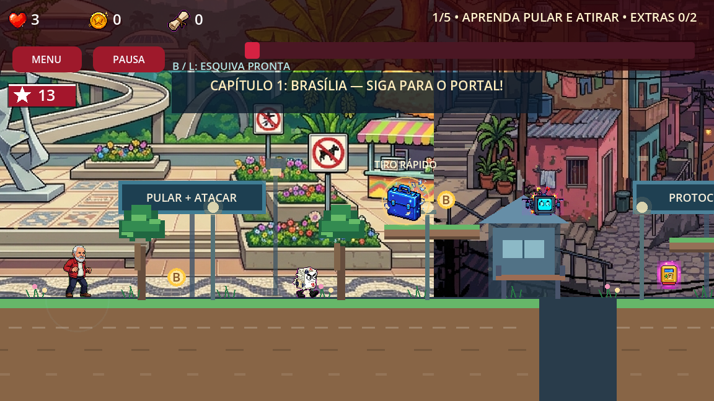

EDIÇÃO 13ALFA 0.20 · ACESSO ANTECIPADO
A CAMPANHA DA PRINCESA
O RESGATE
O RESGATE
DE JANJA
Junte-se a Lula ou Alckmin. Enfrente a papelada, atravesse Brasília e encare o castelo para resgatar a princesa de chapéu de cangaceiro.

IMAGEM REAL DO JOGO